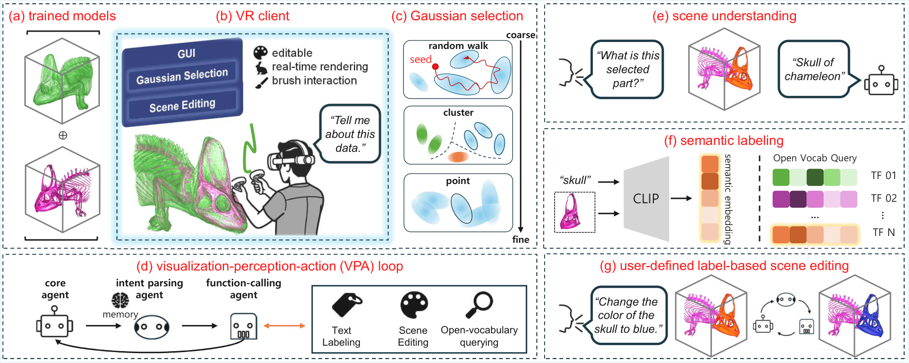
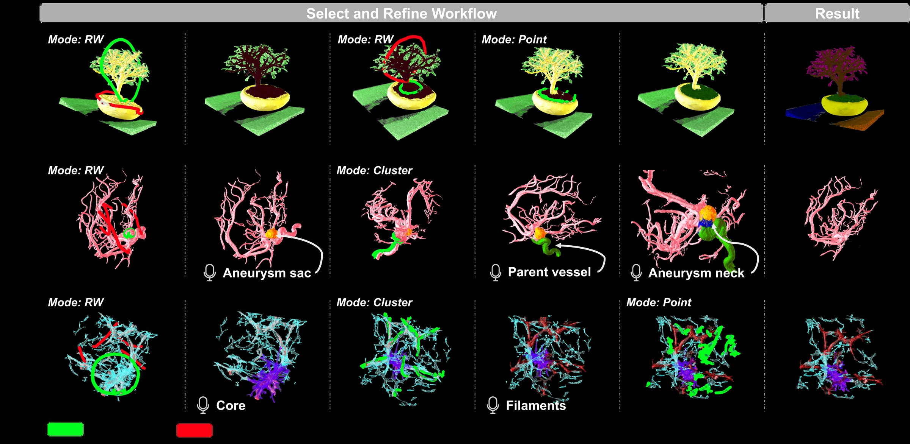
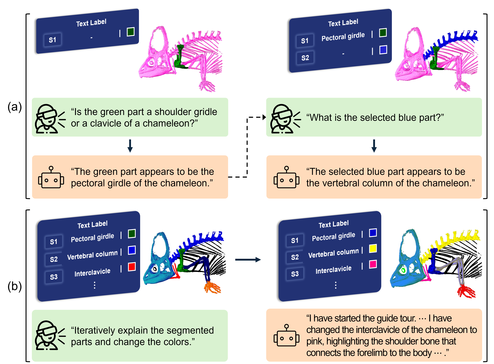
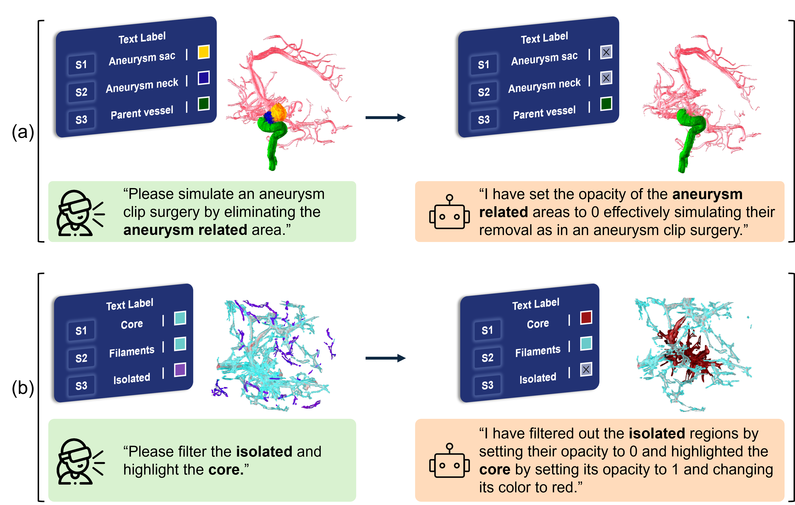
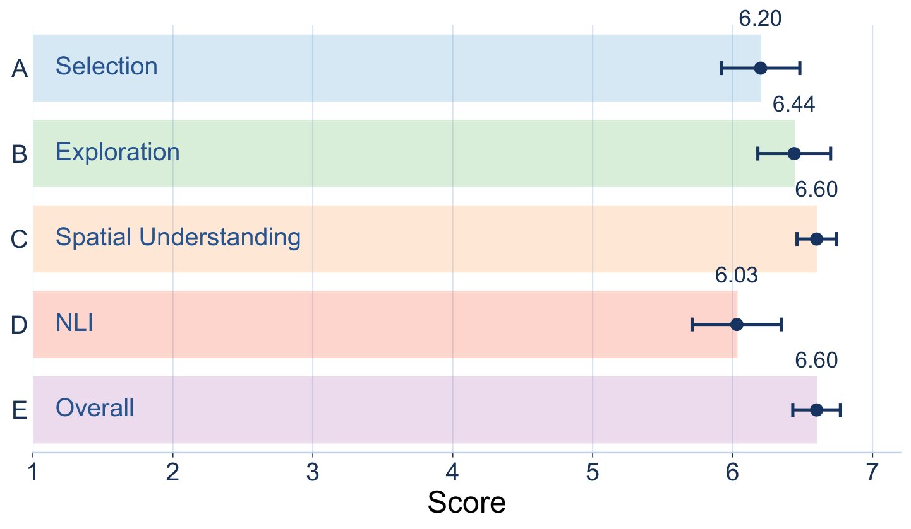
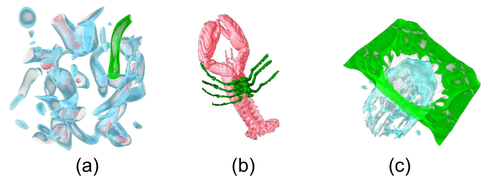
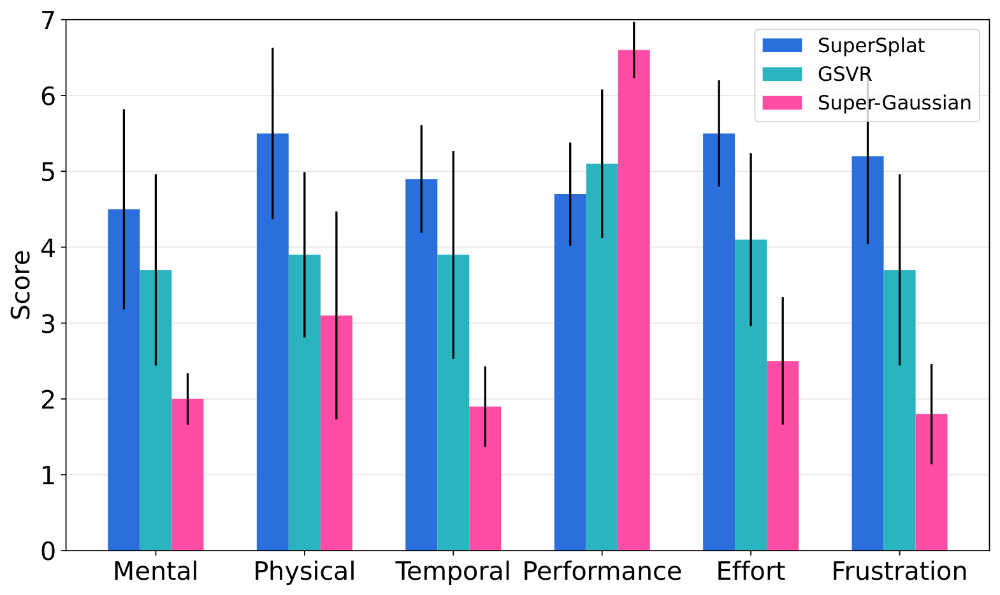
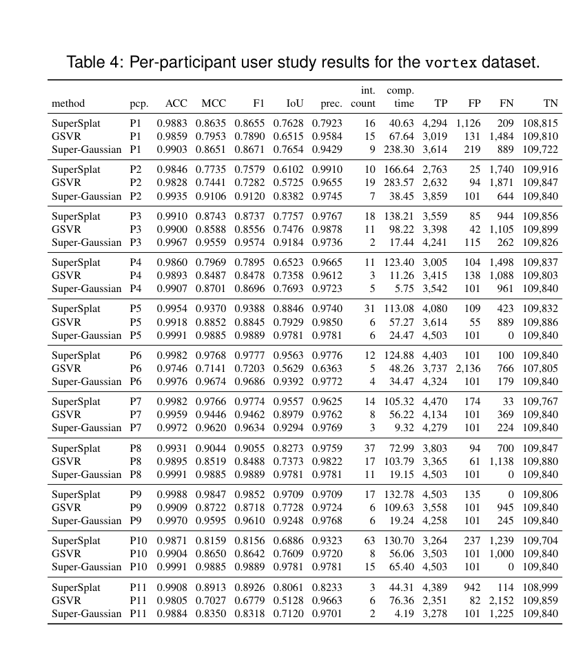
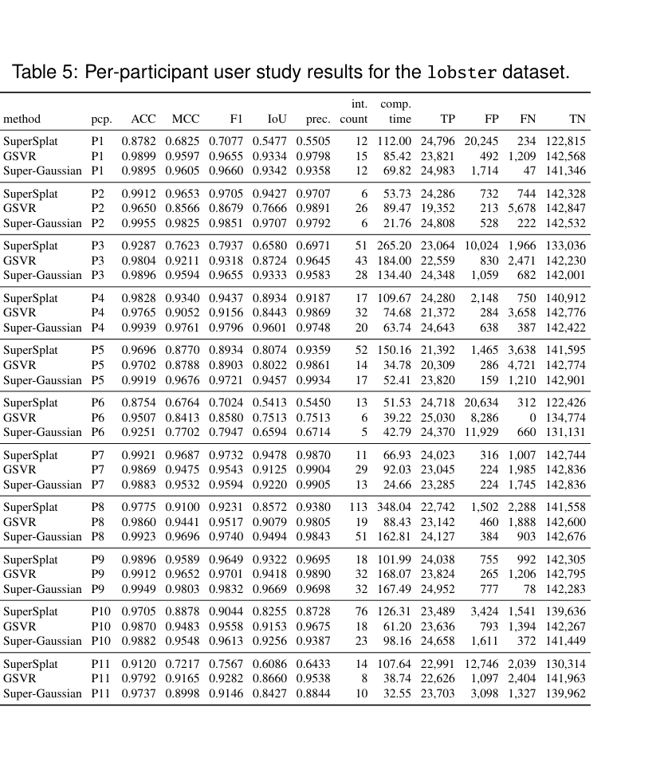
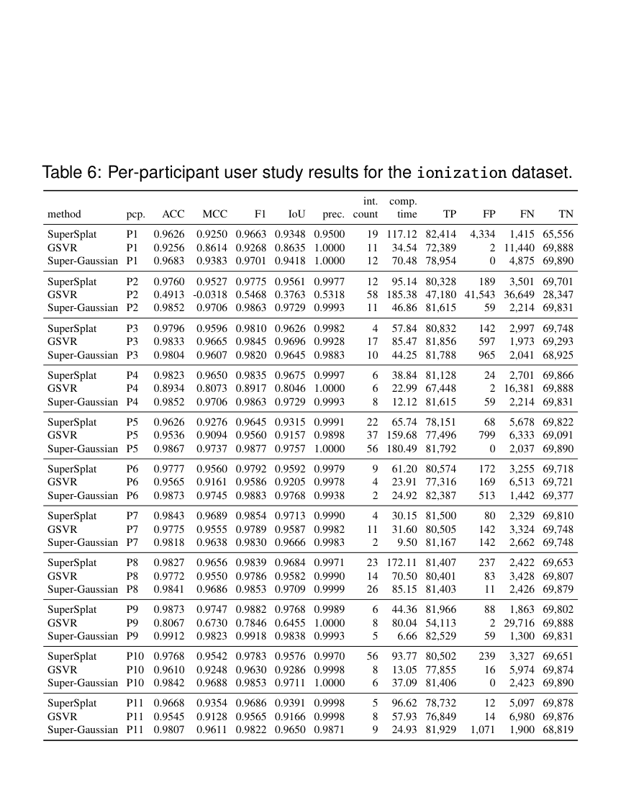

Structure-aware ROI selection
Super-Gaussian groups Gaussian splats into higher-level interaction units and supports random walk, cluster, and point modes within one coarse-to-fine workflow.
VIS 2026 Project Page
Interactive Scene Editing for 3D Gaussian Splatting and NLI-Based Volume Visualization in Virtual Reality
Web-compressed version of the attached project video.
Despite the promise of virtual reality (VR) for intuitive spatial interaction, volume visualization (VolVis) in VR remains constrained by high rendering costs and motion discomfort. Recent advances have shown that representing volumetric scenes with 3D Gaussian splatting enables high-performance rendering, mitigating the computational latency typically associated with immersive 3D data exploration, thus making this representation well-suited for VR. However, existing Gaussian-based scene editing workflows remain limited by slow offline segmentation and fatigue-inducing manual selection.
To address these challenges, we present Super-Gaussian, a novel VolVis framework that enhances scene editing and interaction in VR through intuitive 3D Gaussian selection and natural language interaction (NLI). Our approach groups Gaussian primitives into higher-level units via feature-aware clustering, enabling efficient selection of complex volumetric regions, such as tumors in medical images or filaments in cosmological data, without tedious point-by-point interaction.
Building on this representation, we introduce a hierarchical select-and-refine workflow that combines random-walk-based region propagation, cluster selection, and point refinement, allowing users to progressively specify regions of interest with reduced effort. We further support on-the-fly text labeling of user-selected regions using NLI, allowing users to semantically query, interpret, and manipulate selected content within a visualization-perception-action loop.
The main technical ideas in the current submission.
Super-Gaussian groups Gaussian splats into higher-level interaction units and supports random walk, cluster, and point modes within one coarse-to-fine workflow.
Users can issue open-vocabulary commands to label, query, and edit selected regions while continuing direct spatial interaction with the volume in the headset.
The system extends editable Gaussian-based volume visualization to immersive VR with real-time control over color, opacity, lighting, and viewpoint.

Super-Gaussian extends editable Gaussian-based volume visualization to immersive VR by introducing structure-aware interaction units, a hierarchical select-and-refine workflow, and NLI-based scene understanding and editing.
The central idea is to move from point-wise Gaussian editing toward region-level interaction. The method groups Gaussian primitives into feature-aware clusters, supports random walk, cluster, and point selection modes, and lets users define, label, query, and manipulate regions of interest directly inside VR.
In the paper, these capabilities are framed as three complementary outcomes: spatially guided interpretation of volumetric structures, iterative perception through selection plus querying, and flexible communication or presentation workflows built on user-defined labels.
Representative scenarios spanning natural objects, medical data, simulation data, and anatomy-focused exploration.
The paper presents four case studies to show how Super-Gaussian extends NLI-driven volume visualization toward richer exploratory analysis and presentation workflows. The authors highlight three main themes: spatially guided interpretation through partial Gaussian selection, iterative exploration through the combination of selection and language queries, and communication workflows based on interactive region specification.

We evaluate the usefulness of the select-and-refine workflow of our framework using the bonsai dataset. This dataset is known to be difficult to separate using a simple 1D TF, because semantically different structures often share similar intensity values and are therefore mapped to the same visual appearance. Through our VR-based selection, users can intuitively separate regions with similar visual or semantic characteristics and assign different colors to them.
Starting from base models trained with two TFs, we demonstrate how users can progressively refine the visualization by separating and coloring structures such as grass, branches, leaves, and rocks. We first separate the pot region from the surrounding structures using RW selection. To initialize RW, users roughly indicate foreground and background regions using a circular brush. The brush strokes do not need to provide precise seeds; instead, they only need to roughly indicate the ROIs, which is sufficient for RW to separate the pot from the remaining structures.
After this coarse separation, users further refine the selection. In the pot and gravel regions, which have irregular and detailed boundaries, users perform additional manual selection to isolate the necessary areas more precisely. Finally, structures such as leaves and grass, which share similar intensity values, are separated based on spatial distance.
Medical datasets such as the aneurysm dataset can benefit from VR-based selection and interactive text labeling. This dataset captures vascular structures with an aneurysm, where identifying clinically relevant regions is important for analysis and surgical planning.
We first use selection to identify the aneurysm and decompose it into three clinically meaningful components: the aneurysm sac, the parent vessel, and the aneurysm neck. While navigating the volume and rotating the view, users interactively select the connected vascular structures and assign corresponding labels.
In particular, the neck region, which connects the sac to the parent vessel, is of special interest because it is typically the target for surgical clipping. Through natural language instructions, users can simultaneously manipulate all selected units associated with this label, simulating a surgical planning scenario. For instance, users can reduce the opacity of the aneurysm-related area to simulate clipping or removal, enabling clearer visualization of the remaining vessel structures.
For the Nyx dataset, we demonstrate how users can explore and interpret complex cosmological structures through a step-by-step classification and labeling process. We first classify visible structures based on their geometric characteristics, separating a dense central core, elongated filament-like branches extending from the core, and smaller isolated fragments distributed around the structure.
We then assign semantic labels to these regions, identifying them as the core, filaments, and isolated structures. This process reveals meaningful components of the cosmic web that are otherwise difficult to distinguish in semi-transparent volume renderings.
Importantly, this example illustrates that our approach enables users to progressively interpret datasets without clear boundaries or predefined labels through interactive classification and annotation. Even spatially disconnected or visually ambiguous regions can be grouped under a single semantic label. Using NLI, users can then easily filter and manipulate these grouped regions, enabling efficient editing of complex simulation data.
Our framework also enables anatomically meaningful labeling and supports more fine-grained analysis compared to conventional labeling approaches. Through a perception loop, users can interactively explore segmented regions and interpret their semantic meaning.
For example, a user may select a specific bone region of the chameleon and change its color to highlight the selected part. The user can then ask a question such as "Is the green part a shoulder girdle or a clavicle of a chameleon?" The system captures the current VR view, converts it to an image, and sends it along with the query to the LLM.
Based on the visual context and the user query, the model can describe the selected region. Users can query other selected regions in the same way and can also review the overall segmentation results by issuing instructions such as "Give me a guided tour," enabling the system to summarize and explain the segmented structures across the dataset.


Summary cards first, followed by the full study description with the detailed appendix discussion and per-participant tables.
11 unpaid participants, aged 22 to 31, recruited from a local university.
1 left-handed participant, 3 participants wearing glasses, all with normal vision and no color perception difficulties.
Meta Quest 3 via wired Link to a PC-based VR setup.
2064 x 2208 per eye, 110 degree field of view, up to 120 Hz, on a Ryzen 9 9950X + 128 GB RAM + RTX 3090 desktop.
H1. Higher accuracy, higher user preference, and lower interaction fatigue than 2D selection and manual point-based selection.
H2. Lower workload through a hierarchical RW-cluster-point select-and-refine workflow.
H3. Better understanding of unknown structures through selection, text labeling, and NLI-based perception.
H4. Better understanding, selection, and editing through VR-based exploration.
Framework usability with chameleon, aneurysm, and Nyx after a 15 to 35 minute training session.
Mean Likert scores: 6.20 for selection, 6.44 for exploration, 6.60 for spatial understanding, 6.03 for NLI, and 6.60 overall.
Selection comparison against SuperSplat and GSVR on vortex, lobster, and ionization.
Metrics include NASA-TLX workload.
Qualitative feedback on workflow, interaction design, VR exploration, NLI, and usability improvements.
We conducted two separate user studies to evaluate both the performance of our selection method and the usability of our overall framework. In Study 1, participants explored various volumetric datasets using our framework. They experienced VR-based interaction, including controller-based volume editing, NLI, text labeling, and selection-driven NLI queries. We then evaluated the system's usability. In Study 2, we focused on the effectiveness of the selection method by comparing it with existing Gaussian-based selection techniques. We measured participants' mental workload. After both studies, we additionally conducted post-interviews to gather qualitative feedback.
We recruited 11 unpaid participants aged 22 to 31 from a local university. One participant was left-handed and three wore glasses. All participants reported normal vision and no difficulties with color perception.
Regarding prior experience with volume visualization, three participants had none, five had experience with DVR tools, and three had prior research experience in volume visualization. Regarding VR experience, seven participants had no prior experience, one had limited experience, and three were familiar with VR interaction.
We used a Meta Quest 3 headset connected via a wired Link to a PC-based VR setup with 2064 x 2208 resolution per eye, 110 degree field of view, and up to 120 Hz refresh rate. The study was conducted on a desktop PC equipped with an AMD Ryzen 9 9950X 16-Core Processor, 128 GB of RAM, and an NVIDIA GeForce RTX 3090 GPU.
H1. Our selection approach will achieve higher accuracy, higher user preference, and lower interaction fatigue compared to 2D selection and manual point-based selection.
H2. The hierarchical RW-cluster-point-based select-and-refine workflow will reduce user workload by enabling coarse boundary detection followed by fine-grained selection.
H3. Combining selection with text labeling and NLI-based perception will help users better understand unknown structures in the dataset and reduce the number of interactions required.
H4. VR-based exploration will improve users' ability to understand, select, and edit volumetric structures.
To evaluate the usability of our framework for volume exploration and volume visualization, we selected three datasets: chameleon as a biological dataset, aneurysm as a medical dataset, and Nyx as a simulation dataset.
Participants had diverse levels of prior experience with VR and volume visualization. Therefore, a training session was provided to familiarize them with the system, including basic VR interaction such as rotation, translation, and scaling of the volume, brush interaction, text labeling, and NLI. The training was conducted using the bonsai dataset and continued until participants felt confident to proceed without assistance. The duration of the training varied depending on prior VR experience, ranging from approximately 15 to 35 minutes.
After the training phase, participants performed the tasks on three datasets while wearing the VR headset. These tasks covered a range of interaction scenarios across datasets, including precise region selection and editing of vascular structures, semantic understanding and open-ended segmentation of anatomical models, and exploratory analysis in abstract volumetric data through semantic querying, visual adjustment, and refinement of meaningful regions.
We evaluated the usability of our framework using a Likert-scale questionnaire across five categories: selection usability, exploration support, spatial understanding, NLI interaction, and overall experience. Overall, participants reported consistently high scores across all categories, with mean ratings above 6.0 on a 7-point scale.
Participants found the selection interaction intuitive and accurate, with a high usability score of 6.20. The hierarchical select-and-refine workflow was also rated positively, improving selection results and supporting error correction. Exploration and spatial understanding received very high scores of 6.44 and 6.60, with users reporting effective dataset exploration and better perception of 3D structures compared to 2D interfaces. NLI was rated slightly lower but still positively at 6.03, with users finding it helpful, especially when combined with selection. Participants with prior VolVis or VR experience (P3, P5, P8, P9, P11) engaged more actively and reported higher satisfaction.
For overall experience, the system received a high rating of 6.60, indicating it was enjoyable and useful for volumetric data exploration, particularly among users with visualization experience. In summary, the results show that the framework enables intuitive interaction, effective selection and refinement, and improved understanding of volumetric data. These findings support H3 and H4.

To evaluate user workload, we selected three datasets. The vortex dataset features a transparent outer structure surrounding a dense inner core, the lobster dataset includes surface-connected regions with thin leg structures, and the ionization dataset contains a large, sparse target region with empty spaces.
Before the study, participants were introduced to the target selection task and instructed to select the regions highlighted in red. We compared three selection methods: a 2D screen-space method (SuperSplat), a manual point-based VR method (GSVR), and our Super-Gaussian. To ensure fairness, participants performed the selection tasks using all three methods in a randomized order.
Before the main tasks, participants completed a training session using the beetle dataset. They were allowed to practice each method until they felt confident in using the interaction techniques. For each dataset, participants first explored the volume to locate the target region. Selection began only after they had identified the target region.
In the VR conditions, both GSVR and Super-Gaussian used controller-based interactions for volume manipulation, including rotation, translation, and scaling. In SuperSplat, participants used a mouse and keyboard to rotate, translate, and scale. Shortcut keys such as Ctrl+Z and WASD navigation were enabled, and selection refinement was supported using modifier keys. Participants were allowed to refine their selections until they were satisfied and then confirmed the selection by pressing the Complete button.
To assess workload and fatigue, participants completed NASA-TLX and post-questionnaires after the trials.
The results show that Super-Gaussian consistently outperforms baseline methods in both user experience and task performance. The NASA-TLX evaluation indicates that Super-Gaussian significantly reduces user workload, with substantially lower mental demand, temporal demand, effort, and frustration, while also achieving the highest perceived performance score.


Participants' feedback shows that users naturally adopted a coarse-to-fine selection strategy, starting with broad region selection (RW or cluster modes) and refining with point-based interaction. This confirms that the hierarchical workflow improves efficiency while preserving precision (H2). Selection behavior was adaptive to dataset characteristics: simple or well-separated regions were handled with coarse methods, while complex or dense structures required combinations of cluster and point refinement. This demonstrates the system's flexibility in handling varying data complexity. Compared with traditional point-based tools, participants consistently reported greater efficiency and reduced physical effort, supporting H1. The multi-method approach reduced repetitive manual interaction and improved task speed. Users also highlighted clear advantages of VR over 2D interaction (H4), particularly for spatial understanding, depth perception, and ease of manipulating 3D data. However, users with strong 2D tool experience sometimes still preferred familiar workflows. The integration of NLI was generally seen as beneficial (H3), helping users interpret and query data intuitively, though improvements in latency and readability are needed. Participants suggested several usability improvements, including better visual feedback for tools, undo functionality, and more intuitive controller mappings. Finally, the framework was considered especially effective for complex, unfamiliar, or overlapping datasets, with potential applications in domains like medical imaging and SciVis.
The post-interview responses provide additional insights into how participants perceived the selection workflow and interaction design. A consistent pattern was the use of a coarse-to-fine strategy, in which broad regions were first selected using RW or cluster mode and then refined using point mode selection (P2, P4, P7, P9, P10, P11). This behavior aligns with H2, suggesting that the hierarchical select-and-refine workflow effectively reduces the need for exhaustive point-based interaction while maintaining flexibility for fine-grained editing. This pattern was also explicitly described by participants. For instance, P9 noted that they often used "RW" to first select a large region and then "cluster" for refinement, while P8 described a structured workflow where "RW -> cluster -> point" was used to progressively refine the selection and balance efficiency and accuracy.
Participants also emphasized that the choice of selection method strongly depended on dataset characteristics (P1, P2, P4, P7, P8, P9). Broad, clearly separated regions were typically handled using RW mode, whereas dense or structurally complex regions required cluster or point-based refinement. As P4 described, simple regions could be handled with point-based interaction alone. In contrast, more complex structures required combinations such as cluster plus point or RW plus point for efficient selection. Similarly, P8 reported that visually distinct regions were efficiently handled with RW selection alone, whereas regions with similar features required cluster-based selection followed by point-level refinement. These observations indicate that the framework supports adaptive interaction strategies that respond to structural complexity, separation, and feature similarity.
Compared with traditional point-based selection approaches, participants consistently reported improved efficiency and reduced effort (P1, P4, P7, P8, P9, P10), supporting H1. Several participants noted that GSVR was time-consuming and physically demanding, while Super-Gaussian enabled faster selection through a combination of methods. In particular, P8 emphasized that "the difference in task speed and fatigue was noticeable," and P10 noted that cluster-based interaction allows users to "select reasonably adjacent regions" efficiently. These responses highlight that the method's benefit lies not only in accuracy but also in reducing repetitive manual interaction.
Participants also reported clear advantages of VR-based interaction over 2D approaches, particularly in terms of spatial understanding and interaction efficiency (P4, P5, P7, P8, P9, P10), supporting H4. VR allowed users to directly access and manipulate volumetric structures in 3D, reducing ambiguity caused by overlap and improving depth perception. For example, P5 noted that "In 2D-based interaction, I had to actively move and adjust the volume to understand its structure, while in VR, simply changing the viewing angle was enough to grasp it. Moreover, controlling the volume using only a mouse required a high level of concentration." Similarly, P9 observed that "in the vortex dataset, it was much easier to find the desired region in VR than in 2D," and that viewpoint control was significantly more flexible. P8 further emphasized that rotation, translation, and scaling in VR made it easier to understand spatial structures and perform analysis. However, users with strong prior experience in 2D image editing tools tended to remain comfortable with 2D-based workflows in certain scenarios (P3, P6), suggesting that familiarity can influence interaction preference.
The integration of NLI and text labeling was generally perceived as helpful for semantic interpretation and interaction (P3, P5, P6, P8, P9), supporting H3. Participants noted that NLI enabled intuitive querying and understanding of unfamiliar datasets. For instance, P3 highlighted that "I found NLI useful for obtaining explanations, as the system could provide explanations for specific regions or for the volume as a whole." P6 reported that speech-based interaction was particularly useful when the text in the NLI panel was less readable. At the same time, participants noted that latency in text labeling and LLM responses should be reduced.
Several usability-related limitations and improvement suggestions were also raised. Participants requested clearer visual feedback for brush interaction, such as indicating the brush tip or providing a preview (P5), and emphasized the need for undo functionality (P7). Others suggested improving controller-based interaction, including more intuitive button mappings and shortcut-based operations (P2, P8). For example, P2 suggested that brush activation should be toggleable via controller input with clear visual feedback, while P8 noted that mapping panel button inputs such as the mic button to controllers could improve efficiency and bring VR interaction closer to the speed of traditional mouse-and-keyboard workflows.
Finally, participants highlighted that the proposed framework is particularly well-suited for complex, unfamiliar, or spatially overlapping datasets (P4, P5, P6, P7, P8, P10, P11). As P4 noted, "for unfamiliar and complex cases, it becomes easier to quickly understand and select the desired volume," especially in datasets such as vascular structures or cosmological data. P8 further emphasized its applicability to medical datasets, noting that it can support fine-grained segmentation tasks such as distinguishing cancer and non-cancer regions within the same organ. Participants also suggested potential applications in other domains, including interior or structured scene datasets (P11). Overall, the post-interview results reinforce the quantitative findings and support all four hypotheses.


